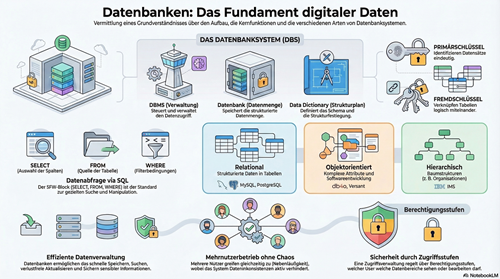

Daten und Informationen

Daten spielen in unserem Alltag eine zentrale Rolle: Ob beim Nutzen sozialer Netzwerke, beim Online-Shopping oder in der Schule – überall werden Informationen gespeichert, verarbeitet und genutzt. Doch wie gelingt es, große Mengen an Daten strukturiert zu organisieren und gezielt darauf zuzugreifen?
In diesem Lernmodul lernst du die Grundlagen von Datenbanksystemen kennen – dem Fundament der digitalen Welt. Du erfährst, wie Daten in Datenbanken gespeichert werden, welche Aufgaben ein Datenbankmanagementsystem (DBMS) übernimmt und wie Daten durch Abfragen gezielt ausgewertet werden können.
Darüber hinaus bekommst du Einblick in verschiedene Arten von Datenbanken, wie zum Beispiel relationale oder hierarchische Modelle, und lernst wichtige Konzepte wie Primär- und Fremdschlüssel kennen. Diese helfen dabei, Daten eindeutig zu identifizieren und miteinander zu verknüpfen.
Am Ende des Moduls wirst du verstehen, wie Daten strukturiert werden, wie mehrere Nutzer gleichzeitig mit Daten arbeiten können und warum Sicherheit und Zugriffsrechte in Datenbanksystemen eine wichtige Rolle spielen.
Dieses Wissen bildet die Grundlage dafür, später selbst Datenbanken zu entwickeln und effektiv mit ihnen zu arbeiten.